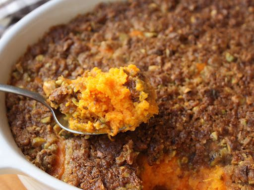

Chef John's Sweet Potato Casserole

Description
Unlike many sweet potato casseroles, this one is not too sweet. It smells so amazing, with subtly sweet potatoes accentuated with maple syrup and a pistachio topping. It's a wonderful combination of taste and textures.
Ingredients
- 2 ½ pounds sweet potatoes, peeled and cubed
- salt
- 2 tablespoons butter
- 2 large eggs
- ¼ cup maple syrup
- ¼ cup buttermilk
- ⅓ cup milk
- ½ teaspoon vanilla extract
- ½ teaspoon salt
- 1 pinch ground allspice
- 1 pinch cayenne pepper
Steps
- Preheat oven to 350 degrees F (175 degrees C). Grease a 2 1/2-quart baking dish with butter.
- Place sweet potato cubes into a large pot, cover with water, and add a large pinch of salt. Bring to a boil and cook until a knife is easily inserted into a sweet potato cube, about 10 minutes. Drain well. Return to the pot and mash 2 tablespoons butter into sweet potatoes.
- Whisk eggs, maple syrup, buttermilk, milk, vanilla extract, cayenne pepper, allspice, and 1/2 teaspoon salt together in a large bowl until smooth. Gradually mash sweet potatoes into egg mixture, starting with 2 tablespoons of sweet potato mixture, until all sweet potatoes are incorporated. Transfer sweet potatoes into prepared baking dish.
- Mix pistachios, brown sugar, flour, and 1/4 cup melted butter together until completely mixed. Crumble topping evenly over top of sweet potatoes. Use the back of a fork to gently press pistachio mixture down onto sweet potatoes.
- Bake in the preheated oven until topping is browned and casserole is set, 25 to 30 minutes. If desired, place under oven's broiler for 5 minutes to give topping a little more brown color. Let rest to cool slightly before serving, about 10 minutes